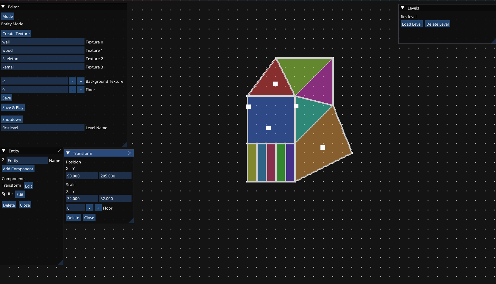
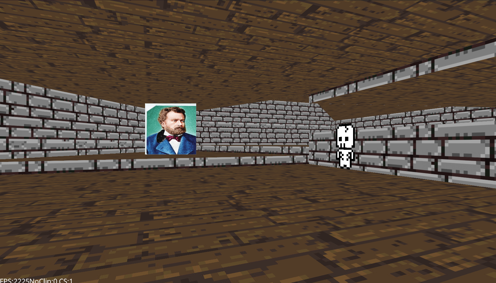

Open Source
C++20
Rust
View on GitHub


C++
C
Rust
OpenGL
Vulkan
GLSL
SDL3
ImGui
OpenAL
Tracy
Box2D
Complete Engine Toolchain
Launcher, visual editor, OpenGL runtime, asset/project pipeline, Lua scripting, OpenAL audio, Tracy profiling, localisation tooling, and standalone export support.
Sector-Based 3D Renderer
Doom/Build-inspired sector worlds with independent floor and ceiling heights, textured walls/floors, decals, billboards, sprites, depth buffering, and SSBO-backed geometry.
Data-Oriented ECS
Stable entity IDs and type-specific component arrays for cache-local iteration across rendering, physics, scripting, collision, and editor systems.
Profiling & Optimisation
Collision uses dirty flags and current/neighbor-sector filtering. Tracy captures show a median collision pass of 44.97 microseconds with 13 entities in one sector.
- Built a complete C++20 engine/editor workflow with project launcher, visual level editor, OpenGL runtime, asset/project pipeline, Lua scripting, OpenAL positional audio, Tracy profiling, localisation tooling, and standalone export support.
- Designed a sector-based 3D rendering architecture inspired by classic Doom/Build-style engines, using connected sectors with independent floor and ceiling heights, textured walls and floors, decals, billboards, sprites, depth buffering, and SSBO-backed geometry buffers.
- Implemented a data-oriented ECS using stable entity IDs and type-specific component arrays, improving cache locality and keeping runtime iteration predictable for physics, scripting, rendering, collision, and editor systems.
- Optimised collision detection with dirty flags and sector-aware broad-phase filtering, checking entities and walls only inside the current sector and neighbouring sectors instead of scanning the full level.
- Profiled the engine with Tracy across rendering, physics, collision, scripts, and frame-level runtime systems. Representative captures show the full update loop around 425 microseconds, with rendering around 415 microseconds in the measured render zone.
- Built a custom SIMD-accelerated linear algebra layer using SSE intrinsics, including __m128 register operations, alignas(16) memory alignment, anonymous unions for vector component access, and Newton-Raphson refinement for selected math operations.
- Applied low-level optimisation techniques around cache-local data layout, branch-conscious control flow, memory alignment, SIMD vectorisation, and pipeline-friendly iteration in performance-sensitive systems.
- Developed Rust helper tools for standalone exporting and translator-friendly localisation, including a localisation app that generates the required JSON files automatically so translators do not need to manage project paths or technical setup manually.
- Built the exporter in Rust for fast file-management-heavy workflows, with future plans for binary asset encoding, asset packing, and more robust standalone distribution support.